Concept
The main components that make up the SDK are as follows.
Controller- All operations on the AUTD3 device are performed through this.Geometry- Container forDevice.Device- Corresponds to the AUTD3 device. Manages how the device is positioned in the real world. Container forTransducer.Transducer- Corresponds to the transducer. Manages where the transducer is located in the real world.
Link- Interface with the device.Gain- Manages the phase/intensity of each transducer.STM- Provides Spatio-Temporal Modulation (STM) functionality. Manages the time series of phase/intensity data for each transducer.Modulation- Provides AM modulation functionality. Manages the time series of modulation data.Silencer- Manages the silencing process.
The usage of the software is as follows.
First, specify the arrangement of the AUTD3 devices in the real world, decide which Link to use, and open the Controller.
Then, through the Controller, send Gain (or STM), Modulation, and Silencer data to the device.
Based on the sent data, PWM signals are applied to the transducers. The flow until the signal is generated is as follows.
{kind=link}

The intensity data specified by Gain/STM is sequentially multiplied by the modulation data specified by Modulation and then passed to the Silencer.
The phase data specified by Gain/STM is passed directly to the Silencer.
The Silencer processes these data for silencing1.
Finally, based on the intensity/phase data processed by the Silencer, PWM signals are generated and applied to the transducers.
Note that the intensity/phase data and modulation data are all .
For details, refer to Silencer.